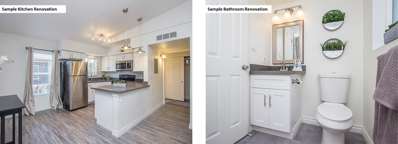
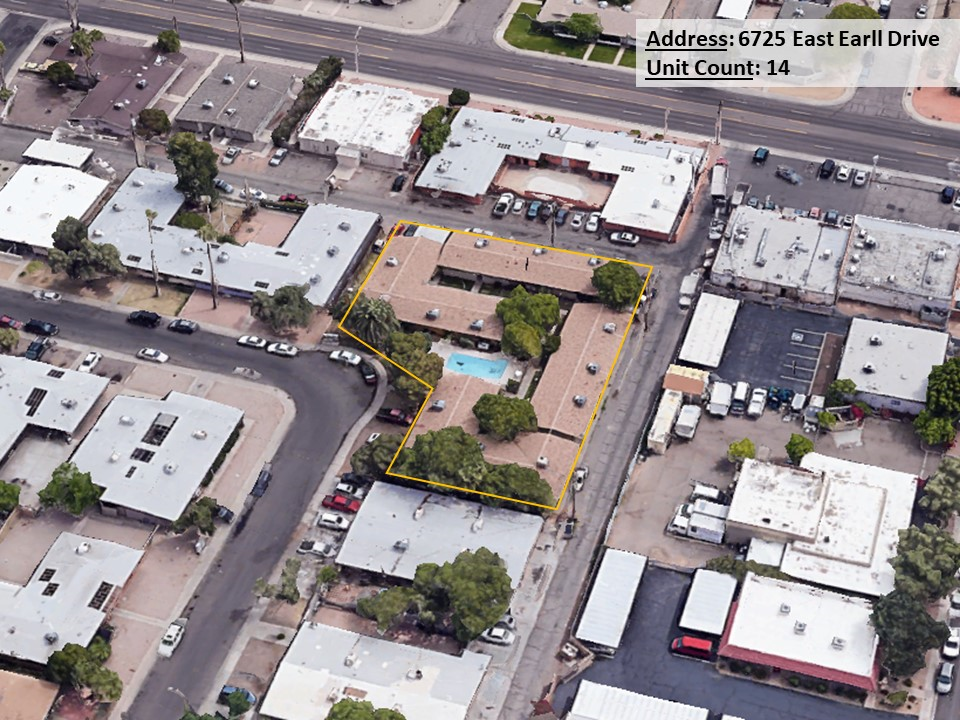

Investment Overview
RealtyShares is pleased to present its investors with an opportunity to invest in debt securities related to a senior loan that is secured by a portfolio of multifamily properties located throughout Scottsdale, AZ. The portfolio was 96% occupied according to the April 2018 rent roll and is comprised of 49 units across ten (10) buildings (each property individually, a "Property," and collectively, the "Properties" or “Portfolio”). The majority of the Portfolio is concentrated in infill locations approximately 1 mile southwest of Downtown Scottsdale, with a couple of other small buildings (7 units total) located closer to the Phoenix International Airport.
The Sponsorship is comprised of three experienced co-borrowing tenants in common (collectively “Sponsor” or “Borrower”). The Sponsor’s business plan includes a robust capital improvement plan designed to improve the Properties overall curb appeal, systems upgrades, and unit interiors to command higher rent premiums throughout. The loan includes a $600,000 capital expenditure reserve to cover a portion of the total capex budget.
Investors are to receive debt securities (borrower payment dependent notes, or "Notes") of a RealtyShares subsidiary, RS Lending, Inc. ("RS Lending," or the "Company") that will make the senior loan to the tenants in common (the "Borrowers") that will hold title to the Properties. The performance of the Notes is tied to the performance of that loan, which loan is secured by a first lien against the Properties. The Notes themselves are unsecured obligations of the Company.
Notwithstanding the minimum investment amount stated above, RealtyShares will be offering to first-time platform investors a lesser minimum investment amount of $5,000. The higher minimum investment amount stated above will continue to apply for all other investors. Please contact invest@realtyshares.com if you are interested in taking advantage of the lower investment minimum being offered to first-time platform investors.
The total raise of $4,000,000 is being conducted in tranches; this is tranche 3 of 4. The loan metrics described here reflect the total loan amount of $4,000,000.
| Investment Type |
Original Term |
Total Loan Amount |
| Debt Securities Relating to Senior Debt |
24 Months |
$4,000,000 |
| Loan-to-After Repair Value |
Interest Rate |
Tranche Number |
| 73.92% |
9.00% |
3 of 4 |
Investment Highlights
- Primary Metro: The Phoenix-Mesa-Scottsdale, AZ metropolitan statistical area (MSA) was recently ranked #11 on Forbes' annual "America's Fastest-Growing Cities 2018" list, up from #16 from its 2017 ranking. Forbes expects the MSA to have 2.0% population growth and 2.7% job growth in 2018; you can read that article here.
- High Occupancy Portfolio & Submarket: Per the April 2018 rent roll, the Portfolio is 96% occupied, with only 2 units vacant across the Portfolio. Additionally, according to REIS, B/C grade assets within the South Scottsdale submarket finished Q1 2018 with an average vacancy of 4.1% and 3.9% for 2017.
- Neighborhood Population Growth: The population within a 1-mile radius of the Portfolio has increased 16.1% since 2010, from 15,644 to the 2018 population of 18,168 (ESRI). The population is expected to increase an additional 10.9% over the next 5 years to over 20,000.
- Central Location: With most of the Portfolio located in the community near the intersection of E Osborn Road and N 68th Street, the Property boast excellent access to Downtown Scottsdale and the greater metropolitan area. The Properties are located approximately 1 mile southwest of Downtown Scottsdale (5 minutes), approximately 5 miles northeast of Phoenix Sky Harbor International Airport (20 minutes), and approximately 8 miles west of Downtown Phoenix (20 minutes).
- Senior Position: Investors will be purchasing Notes of the Company that relate to the senior loan secured by the Properties. The Company’s senior loan is to have priority in payment to the common equity of the Sponsor and other investors. In the event of a borrower default, the Company's enforcement remedies include foreclosure and sale of the Properties, which make such senior loans relatively less risky than other types of real estate investments (although risks remain -- see Risk Disclosures below). For a better understanding of some advantages of first lien loan investments, see Remedies for Different Investment Types.*
- Short-Term Loan: The initial maturity date of the loan is May 11, 2020. The short-term nature of the loan potentially helps to limit the investment's exposure to larger market fluctuations.
- Experienced Borrower: The Sponsor is an experienced real estate investor in the Phoenix-Mesa-Scottsdale MSA. The Sponsor currently reports managing approx. 375 units in that metro area.
* Note: Outside articles are offered for informational purposes only and are not part of the offering materials for this opportunity.
Properties
The Properties are a portfolio of 10 multifamily properties comprising 49 residential units throughout the Phoenix-Mesa-Scottsdale MSA. Below is an overview of the Portfolio and sample inspirational photos for the planned interior units renovations. More detail about each of the specific buildings can be found below.
Portfolio Overview
Sample Interior Renovation Inspirations

Property Detail
- 6725 East Earll Drive
This Property is a complex of four buildings containing 14 individual units, representing the larges individual building in the portfolio. The buildings were constructed in 1958 and have 10,003 square feet (SF) of net rentable area (NRA). There are two studio units, seven 1bd/1ba units, and five 2bd/1ba units, with a total current occupancy rate of 93%.

- 2041 North 49th Place
This Property is currently a fully occupied tri-plex. The building was constructed in 1962 with 2,168 sf of NRA. There is one 1bd/1ba unit and two 2bd/1ba units, with a total current occupancy rate of 100%.
- 2013 North 49th Place
This Property is currently a fully occupied four-plex The building was constructed in 1962 with 2,650 sf of NRA. There are three 1bd/1ba units and one 2bd/1ba units with a total current occupancy rate of 100%.
- 6707 East Monterey Way
This Property is currently a fully occupied four-plex. The building was constructed in 1958 with 2,800 sf of NRA. There is one 1bd/1ba unit and three 2bd/1ba units, with a total current occupancy rate of 100%.
- 6626 East Earll Drive
This Property is currently a fully occupied four-plex. The building was constructed in 1958 with 2,500 sf of NRA. There is one studio unit, one 1bd/1ba units, and two 2bd/1ba units, with a total current occupancy rate of 100%.
- 6625 East Earll Drive
This Property is currently a fully occupied four-plex. The building was constructed in 1958 with 2,500 sf of NRA. There is one studio unit, one 1bd/1ba unit, and two 2bd/1ba units, with a total current occupancy rate of 100%.
- 6626 East Cheery Lynn Road
This Property is currently a fully occupied four-plex. The building was constructed in 1958 with 2,500 sf of NRA. There is one studio unit, one 1bd/1ba unit, and two 2bd/1ba units, with a total current occupancy rate of 100%.
- 6625 East Cheery Lynn Road
This Property is currently a fully occupied four-plex. The building was constructed in 1958 with 2,600 sf of NRA. There are two 1bd/1ba units and two 2bd/1ba units, with a total current occupancy rate of 100%.
- 3320 North 66th Street
This Property is currently a fully occupied four-plex. The building was constructed in 1959 with 2,400 sf of NRA. There are three 1bd/1ba units and one 2bd/1ba unit, with a total current occupancy rate of 100%.
- 3314 North 66th Street
This Property is currently a fully occupied four-plex. The building was constructed in 1959 with 2,400 sf of NRA. There are three 1bd/1ba units and one 2bd/1ba unit, with a total current occupancy rate of 100%.
Market Summary
Local Demographic Trends: According to ESRI, the population within 3 miles of the Property is 114,047, which is a 15.8% increase since 2010. The population is expected to increase another 8.5% to 123,722 by 2023. The median household income within a 1-mile radius of the Property is $51,752 and the median home value is $262,812.
Primary Metro: The Phoenix-Mesa-Scottsdale, AZ metropolitan statistical area (MSA) was recently ranked #11 on Forbes' annual "America's Fastest-Growing Cities 2018" list, up from #16 from its 2017 ranking. Forbes expects the MSA to have 2.0% population growth and 2.7% job growth in 2018; you can read that article here.
South Scottsdale Submarket: According to REIS, B/C grade assets within the South Scottsdale submarket finished Q1 2018 with an average vacancy of 4.1% and 3.9% for 2017. The B/C grade multifamily class experienced 5.0% rent growth in 2017 and a 2.8% increase in Q12018 according to REIS. Since 2006, only 132 new units have been added to the B/C class, representing an approximately 3.0% increase to the total inventory in over 10 years.
Demographic information using 6725 East Earll Drive as the center point are as follows:
| |
1-mile |
3-mile |
5-mile |
| postulacion |
| 2018 |
18,168 |
114,147 |
258,901 |
| 2023 (est.) |
2.18% |
1.70% |
1.63% |
| Expected % Change (annualized - est.) |
20,147 |
123,722 |
280,050 |
| Household Income (median) * |
| 2018 |
$51,752 |
$52,310 |
$48,707 |
| 2023 (est.) |
$60,100 |
$59.794 |
$55,365 |
| Expected % Change (annualized - est.) |
3.23% |
2.86% |
2.73% |
* Source: ESRI
| Total Loan Amount |
$4,000,000 |
| Interest Rate |
9.00% (net to investors) |
| Original Loan Term |
24 Months |
| Capital Expenditure Reserve (Held at Closing) |
$600,000 |
| Interest Reserve (Held at Closing) |
$200,000 |
| Aggregate Appraised As-Is Value |
$4,036,000 |
| Loan-to-Cost Ratio |
82.00% |
| Estimated Aggregate After-Repair Value * |
$5,411,475 |
| Loan-to-After Repair Value Ratio * |
73.92% (est.) |
| Amortization |
Interest-Only |
* The loan-to-value ratio is based on RealtyShares' underwriting model, which was based in part on after-repair value appraisals for 35 of the 49 Properties. RealtyShares has no reason to believe that the remaining 14 Properties would be materially different in after-repair value. RealtyShares is assigning to the Properties an after-repair value per unit of $110,438, with an aggregate after-repair value of $5,411,475.
| Sources |
|
| RealtyShares Loan |
$4,000,000 |
| Sponsor Equity |
$879,944 |
| Total Sources |
$4,879,944 |
| Uses |
|
| Portfolio Purchase Price |
$3,970,000 |
| Loan Fees* |
$80,000 |
| Capex Reserve |
$600,000 |
| Interest Reserve |
$200,000 |
| Transaction Costs* |
$29,944 |
| Total Uses |
$4,879,944 |
*Loan fees include applicable origination fees, while transaction costs include title costs and other closing expenses, including underwriting and brokerage fees. A significant portion of loan fees are generally payable to RS Lending, Inc. or its affiliates, but some of such fees may be payable to the first lien lender or to broker intermediaries. Transaction costs are largely payable to third parties.
Sponsor Overview
The Properties are to be held by three co-borrowing tenants in common, the sponsors of which are described below.

David Cameron
David Cameron is a fourth-generation real estate professional with significant experience in real estate generally. Mr. Cameron has worked as (among other things) a real estate broker, developer, investor, syndicator, project manager, and asset manager. Mr. Cameron’s career has spanned over three decades and has been focused on the Los Angeles, San Diego, and Phoenix metropolitan areas. Mr. Cameron currently currently manages a portfolio of over 500 apartments in the southwestern region of the United States.

Arthur Misaki
Arthur Misaki is a CPA and has for over 30 years run a full-service real estate company that owns and manages commercial real estate throughout the United States. Mr. Misaki has controlled numerous different property types through his real estate activities, including multifamily apartment complexes, office buildings, self-storage facilities, industrial warehouses, and mobile home parks. Mr. Misaki has a BS and an MBA from California State University at Northridge.
Alex Gamboa
Alex Gamboa has been involved in real estate since 2005 and has worked in investments, development, project management, asset management, renovations, and brokerage. In recent years, Alex has worked with Mr. Cameron in multifamily brokerage and in the acquisition and rehabilitation of distressed apartment complexes, specifically in the successful purchase and repositioning over the last three years of more than 10 multifamily properties in the San Diego and Phoenix areas. During that same period, Mr. Gamboa has also successfully brokered over 50 real estate transactions totaling over $30 million.
David Cameron has experienced a bankruptcy (filed in 2008 and discharged in 2012) and was in 2008 the subject of a tax lien related to a third-party managed property unconnected to these Properties. RealtyShares notes that many active real estate investors underwent similar difficulties in the fallout of the Great Recession of 2008-2009.
Arthur Misaki was previously involved in litigation with governmental authorities relating to the allegedly poor condition of a property; that litigation was later dismissed.
Note: The information above was provided by the Sponsors and may not have been verified by NCPS or RealtyShares.